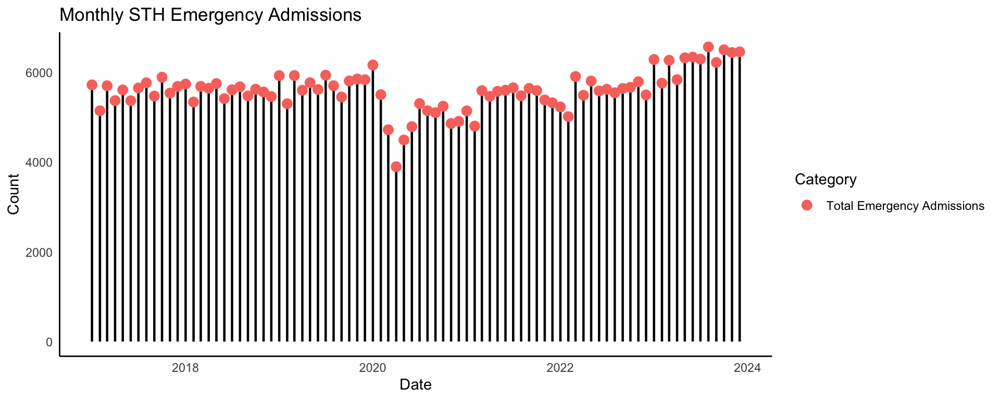
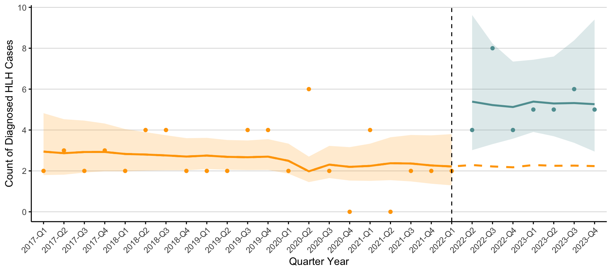

# Set global ggplot themetheme_set(theme_minimal() +theme(panel.grid.major =element_blank(), # Remove the large grid linespanel.grid.minor =element_blank(), # Remove the small grid linespanel.background =element_blank(), # Remove the back groundaxis.line =element_line(colour ="black") # Add a more solid axis line ))
Emergency Admissions
This is the total ED attendances and emergency admissions for STH.
These were accessed and compiled from the monthly summaries provided by NHS digital.
You can see a clear dip during the height of the Covid-19 pandemic, along with a slight upward trend in both ED attendances and admissions.
These are used as the offset in the Poisson model
Code
STH_attendance <-read_csv("data/STH_attendance.csv", col_types =cols(Total_Emergency_Admissions =col_number(), Total_Attendances =col_number(), Month =col_number(), Year =col_number(), Date =col_date(format ="%d/%m/%Y")))# Pivoting the data to long formatSTH_attendance_long <- STH_attendance %>%mutate("Total Emergency Admissions"= Total_Emergency_Admissions,"Total ED Attendances"= Total_Attendances) %>% plotly::select(Date, "Total Emergency Admissions") %>%pivot_longer(cols =c("Total Emergency Admissions"),names_to ="name",values_to ="count")
Code
STH_attendance_long %>%ggplot(aes(x = Date, y = count, colour = name)) +geom_segment(aes(x = Date, xend = Date, y =0, yend = count), color ="black", size =0.8) +# Vertical linesgeom_point(size =3) +# Dots at the data points, color mapped to `name`labs(title ="Monthly STH Emergency Admissions",x ="Date",y ="Count",colour ="Category")

Interrupted Time Series
This is an ITS analysis using a Poisson distribution. Overdispersion is calculated for each model (assumption of the Poisson distribution) and Durbin Watson test performed for auto-correlation (assumption of the ITS analysis).
Each model has three parameters estimates:
Time = the overall effect of time
Intervention = the immediate effect of the intervention (i.e. a step change)
Time from = the change in the slope pre/post (i.e. after the intervention does the rate change)
Call:
glm(formula = count ~ time + intervention + time_from + offset(log(emergency_admissions)),
family = poisson, data = main_analysis)
Coefficients:
Estimate Std. Error z value Pr(>|z|)
(Intercept) -8.6235926990 0.2712006473 -31.79783 < 0.0000000000000002 ***
time -0.0128998786 0.0225404302 -0.57230 0.567119
intervention 0.8562647837 0.4176845952 2.05003 0.040362 *
time_from -0.0141232922 0.0851200309 -0.16592 0.868218
---
Signif. codes: 0 '***' 0.001 '**' 0.01 '*' 0.05 '.' 0.1 ' ' 1
(Dispersion parameter for poisson family taken to be 1)
Null deviance: 30.11618908 on 27 degrees of freedom
Residual deviance: 21.49078488 on 24 degrees of freedom
AIC: 108.7802385
Number of Fisher Scoring iterations: 5
Code
dispersiontest(poisson_model_quarter_ITS)
Overdispersion test
data: poisson_model_quarter_ITS
z = -1.122128462, p-value = 0.869096088
alternative hypothesis: true dispersion is greater than 1
sample estimates:
dispersion
0.715267578628
Code
dwtest(poisson_model_quarter_ITS)
Durbin-Watson test
data: poisson_model_quarter_ITS
DW = 2.605749141, p-value = 0.861047972
alternative hypothesis: true autocorrelation is greater than 0
Sensitivity Analyses
No resp virus
This is with other resp viruses excluded as well as COVID-19.
Code
# Import datasetHLH_noresp <-read.csv(file ="data/HLH_noresp.csv")# add in the emergency admissionsHLH_noresp <- STH_attendance_quarter %>%full_join(HLH_noresp)
Call:
glm(formula = count ~ time + intervention + time_from + offset(log(emergency_admissions)),
family = poisson, data = HLH_noresp)
Coefficients:
Estimate Std. Error z value Pr(>|z|)
(Intercept) -8.8379924515843 0.2906946822071 -30.40301 < 0.0000000000000002
time 0.0000131313373 0.0233433076509 0.00056 0.999551
intervention 0.7865783173955 0.4183822187460 1.88005 0.060102
time_from -0.0270363021064 0.0853361511040 -0.31682 0.751379
(Intercept) ***
time
intervention .
time_from
---
Signif. codes: 0 '***' 0.001 '**' 0.01 '*' 0.05 '.' 0.1 ' ' 1
(Dispersion parameter for poisson family taken to be 1)
Null deviance: 36.34412073 on 27 degrees of freedom
Residual deviance: 26.24148425 on 24 degrees of freedom
AIC: 110.2651851
Number of Fisher Scoring iterations: 5
Code
dispersiontest(poisson_model_quarter_ITS_noresp)
Overdispersion test
data: poisson_model_quarter_ITS_noresp
z = -0.6420806557, p-value = 0.739589592
alternative hypothesis: true dispersion is greater than 1
sample estimates:
dispersion
0.817725893264
Code
dwtest(poisson_model_quarter_ITS_noresp)
Durbin-Watson test
data: poisson_model_quarter_ITS_noresp
DW = 2.42937327, p-value = 0.720061193
alternative hypothesis: true autocorrelation is greater than 0
Call:
glm(formula = count ~ time + intervention + time_from + offset(log(emergency_admissions)),
family = poisson, data = HLH_coded)
Coefficients:
Estimate Std. Error z value Pr(>|z|)
(Intercept) -9.14818508683 0.33618357501 -27.21187 < 0.0000000000000002 ***
time 0.00328148683 0.02676861269 0.12259 0.902434
intervention 0.82490932092 0.48159668631 1.71286 0.086738 .
time_from -0.12855851997 0.10863571766 -1.18339 0.236654
---
Signif. codes: 0 '***' 0.001 '**' 0.01 '*' 0.05 '.' 0.1 ' ' 1
(Dispersion parameter for poisson family taken to be 1)
Null deviance: 42.32903692 on 27 degrees of freedom
Residual deviance: 37.42850036 on 24 degrees of freedom
AIC: 108.5976664
Number of Fisher Scoring iterations: 5
Code
dispersiontest(poisson_model_quarter_ITS_coded)
Overdispersion test
data: poisson_model_quarter_ITS_coded
z = 0.3539271407, p-value = 0.361696743
alternative hypothesis: true dispersion is greater than 1
sample estimates:
dispersion
1.10390210617
Code
dwtest(poisson_model_quarter_ITS_coded)
Durbin-Watson test
data: poisson_model_quarter_ITS_coded
DW = 3.031741004, p-value = 0.992070573
alternative hypothesis: true autocorrelation is greater than 0
Visualisation
Code
main_analysis <- main_analysis %>%mutate(intervention_2 =case_when(intervention ==0~"Pre", intervention ==1~"Post"))# Get predictions with standard errorspreds <-predict(poisson_model_quarter_ITS, newdata = main_analysis, type ="link", se.fit =TRUE)# Convert standard errors to confidence intervals on response scalemain_analysis$poisson_pred <-exp(preds$fit) # Predicted meanmain_analysis$poisson_pred_lower <-exp(preds$fit -1.96* preds$se.fit) # Lower 95% CImain_analysis$poisson_pred_upper <-exp(preds$fit +1.96* preds$se.fit) # Upper 95% CI# Generate counterfactual (predictions assuming no intervention)main_analysis_no_intervention <- main_analysismain_analysis_no_intervention$intervention <-0# Set intervention to 0 for counterfactualpreds_no_intervention <-predict(poisson_model_quarter_ITS, newdata = main_analysis_no_intervention, type ="link", se.fit =TRUE)main_analysis$poisson_pred_no_intervention <-exp(preds_no_intervention$fit)
Code
# Plotggplot(main_analysis, aes(x = quarter_year, y = count)) +geom_line(aes(y = poisson_pred_no_intervention, group =1), linetype ="dashed", size =1, color ="orange") +# Counterfactual trend geom_point(aes(colour = intervention_2)) +# Observed data points, colored by intervention statusgeom_line(aes(y = poisson_pred, group = intervention_2, color = intervention_2), size =1) +# Poisson model fitgeom_ribbon(aes(ymin = poisson_pred_lower, ymax = poisson_pred_upper, group = intervention_2,fill = intervention_2), alpha =0.2) +# 95% Confidence intervalgeom_vline(xintercept ="2022-Q1", # mark the interventionlinetype ="dashed", color ="black") +labs(x ="Quarter Year",y ="Count of Diagnosed HLH Cases") +scale_fill_manual(values =c("cadetblue", "orange")) +scale_colour_manual(values =c("cadetblue", "orange")) +scale_y_continuous(breaks = scales::breaks_pretty(n =5), labels = scales::label_number(accuracy =1)) +theme(axis.text.x =element_text(angle =45, hjust =1),axis.ticks =element_line(linewidth =0.5),legend.position ="none",panel.grid.major.x =element_blank(), panel.grid.major.y =element_line(size =0.2, linetype ='solid', colour ="grey"))

How many cases missed without autoalert?
Code
# Sum of all the cases diagnosed after the intervention acutally_diagnosed <-sum(main_analysis$count[main_analysis$intervention_2 =="Post"])# Sum of those predicted to be diagnosed with no interventionpredicted_diagnosed <-sum(main_analysis$poisson_pred_no_intervention[main_analysis$intervention_2 =="Post"]) # Actual diagnosed minus predicted diagnosed. Adjusted for 12 months (21 months observed)(acutally_diagnosed - predicted_diagnosed) /21*12